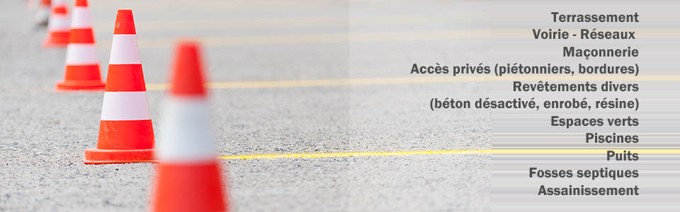
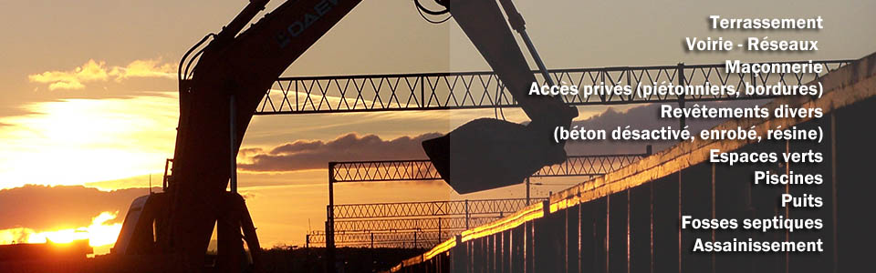

- Terrassement
- Voirie - Réseaux
- Maçonnerie
- Accès privés (piétonniers, bordures
- Revêtements divers (béton désactivé, enrobé, résine)
- Espaces verts
- Piscines
- Puits
- Fosses septiques
- Assainissement
Site en construction
Pour toute information sur nos services demande de devis/réalisation de chantier merci de contacter Alexis Mathieu
- par mail : a.mathieu@boumat-tp.fr
- par téléphone : 06.60.16.37.95
Pour toute information sur nos services comptabilité/gestion merci de contacter
Dimitri Mathieu :
- par mail : dimitri.mathieu@boumat-tp.fr
- par téléphone : 06 78 34 54 83
ou
Brigitte Colin :
- par mail : brigitte-colin@wanadoo.fr
- par téléphone : 06 12 78 14 64
BOUMAT TP : Siret 538047747 00018 - Décennale COVEA RISK : 120141277
© 2012 BOUMAT TP . TOUS DROITS RESERVES